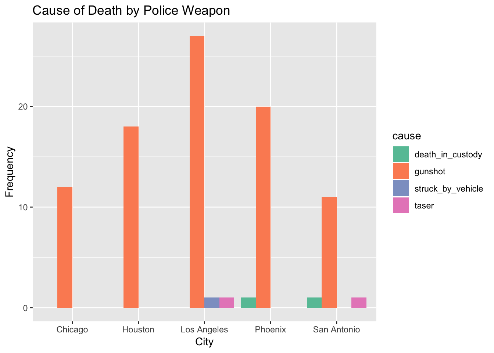
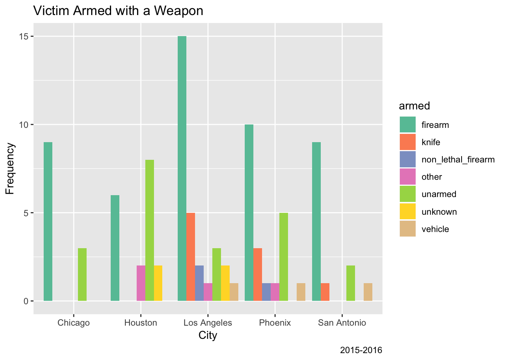

Exploratory analysis
Jaclyn Verity
11/7/2018
First look at City level
Read in main data set from fivethirtyeight github repository on police killings.
library(tidyverse)
library(reshape2)##
## Attaching package: 'reshape2'## The following object is masked from 'package:tidyr':
##
## smithsrequire(RCurl)## Loading required package: RCurl## Warning in library(package, lib.loc = lib.loc, character.only = TRUE,
## logical.return = TRUE, : there is no package called 'RCurl'raw_data = read_csv(
"https://raw.githubusercontent.com/fivethirtyeight/data/master/police-killings/police_killings.csv"
)## Parsed with column specification:
## cols(
## .default = col_character(),
## day = col_integer(),
## year = col_integer(),
## latitude = col_double(),
## longitude = col_double(),
## state_fp = col_integer(),
## county_fp = col_integer(),
## tract_ce = col_integer(),
## geo_id = col_double(),
## county_id = col_integer(),
## pop = col_integer(),
## h_income = col_integer(),
## county_income = col_integer(),
## comp_income = col_double(),
## county_bucket = col_integer(),
## nat_bucket = col_integer(),
## urate = col_double(),
## college = col_double()
## )## See spec(...) for full column specifications.A look into the cities…
city_data = raw_data %>%
mutate(city_state = paste(city, state, sep = ", ")) %>%
group_by(city_state) %>%
summarise(total_killed = n())Found that most cities have 1 killing in 2015. LA had the most with 9. This is not promising for an analysis that has depth of understanding.
Looking to download data from same resource for 2016. The website has a downloadable csv. Formatted exactly the same. Only missing census data.
raw_2016 = read_csv("./data/the-counted-2016.csv")## Parsed with column specification:
## cols(
## uid = col_integer(),
## name = col_character(),
## age = col_character(),
## gender = col_character(),
## raceethnicity = col_character(),
## month = col_character(),
## day = col_integer(),
## year = col_integer(),
## streetaddress = col_character(),
## city = col_character(),
## state = col_character(),
## classification = col_character(),
## lawenforcementagency = col_character(),
## armed = col_character()
## )Just looking at the raw data there is a huge increase from 467 killings in 2015 to 1093 in 2016.
city_data_16 = raw_2016 %>%
mutate(city_state = paste(city, state, sep = ", ")) %>%
group_by(city_state) %>%
summarise(total_killed = n())LA stays the top but more than doubles in deaths. Houston and Pheonix trade places but remain 2 and 3. All the numbers for the top have double or quadroupled.
raw_2016 = raw_2016 %>%
mutate(cause = classification)
raw_combined = bind_rows(raw_data, raw_2016) %>%
mutate(month = factor(month, levels = c("January", "February", "March", "April", "May", "June", "July", "August", "September", "October", "November", "December")),
year = as.integer(year))
city_data = city_data %>%
mutate(year = 2015)
city_data_16 = city_data_16 %>%
mutate(year = 2016)
city_combined = bind_rows(city_data, city_data_16) %>%
mutate(year = as.factor(year))top_cities = city_combined %>%
top_n(20, total_killed)
ggplot(top_cities, aes(fill = year, x = city_state, y = total_killed)) + geom_bar(position = "dodge", stat = "identity") +
theme(axis.text.x = element_text(angle = 80, hjust = 1))
Most of the Top 20 for police killings occured in 2016. The top 3 in 2016 also made the Top 20 overall. Looks like # 1 in 2015 would be 6 in 2016.
Cities in Depth
Cause of Death by Police.
city_depth_data = raw_combined %>%
filter(city %in% c( "Los Angeles", "Houston", "Phoenix", "Chicago", "San Antonio")) %>%
mutate(cause = as.factor(cause),
armed = as.factor(armed))
plot_cause = city_depth_data %>%
select(city, cause, year) %>%
group_by(city, cause) %>%
summarise(freq = n()) %>%
spread(key = cause, value = freq)
plot_cause[is.na(plot_cause)] <- 0
plot_cause1 = plot_cause %>%
janitor::clean_names() %>%
gather(key = cause, value = freq, death_in_custody:taser) %>%
ggplot(aes(fill = cause, x = city, y = freq)) + geom_bar(position = "dodge", stat = "identity") + labs(x = "City", y = "Frequency", title = "Cause of Death by Police Weapon", caption = "2015-2016") + scale_fill_brewer(palette = "Set2")
plot_cause1
Victim armed.
plot_armed = city_depth_data %>%
select(city, armed) %>%
group_by(city, armed) %>%
summarise(freq = n()) %>%
spread(key = armed, value = freq)
plot_armed[is.na(plot_armed)] <- 0
plot_armed1 = plot_armed %>%
janitor::clean_names() %>%
rename(unarmed = no) %>%
gather(key = armed, value = freq, firearm:vehicle) %>%
ggplot(aes(fill = armed, x = city, y = freq)) + geom_bar(position = "dodge", stat = "identity") + labs(x = "City", y = "Frequency", title = "Victim Armed with a Weapon", caption = "2015-2016") + scale_fill_brewer(palette = "Set2")
plot_armed1
top_cities = city_data%>%
top_n(5, total_killed) %>%
knitr::kable()